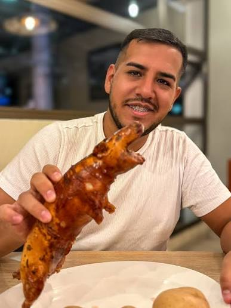

Le cuy asado est du cochon d’Inde rôti entier, plat emblématique de Pasto et du Nariño. C’est une tradition andine ancienne, que l’on prépare surtout pour les fêtes et les repas de famille. L’animal est assaisonné à l’ail et au cumin, puis cuit lentement, souvent sur la braise, jusqu’à ce que la peau soit dorée et croustillante et que la chair reste tendre. Il est servi entier, avec des pommes de terre et une sauce aux cacahuètes, l’ají de maní. C’est un plat qui se partage, que l’on trouve dans les restaurants de Pasto et des villages alentour.